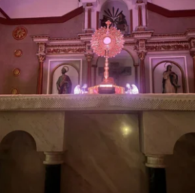

007-LUU
ARCHIVO ULTRA-CURIOSO · 07 OCT
Algo muy
curioso
está pasando.
Jorge encontró una misión… y parece que tiene que ver contigo.
abrir con
mente curiosa →
NOTA DE JORGE · 01
La misión
comienza aquí.
MENSAJE RECIBIDO
“Hoy cumple años
una persona
muy especial.”
Pero Jorge es curioso. Demasiado curioso. Así que decidió investigar exactamente qué hace tan especial a esa persona.
PISTA #1
Encontramos
a la sospechosa.
FICHA DE INVESTIGACIÓN
LUU ♡
Motivo: cumplir años
Nivel de curiosidad: ★★★★★
Última vez vista: siendo demasiado bonita
MUY ESPECIALCONFIRMADO
tocar
ARCHIVO FOTOGRÁFICO · 02
Jorge encontró
más pruebas…
Evidencia 001: se encontró disfrutando de la vida.
archivo_001.jpgEvidencia 002: claramente no sabe posar para una sola foto.
archivo_002.jpgEvidencia 003: demasiado bonita para ser considerada evidencia normal.
archivo_003.jpga una celebración! ↘
MAPA DE AVENTURAS · 03
Elige tu
siguiente parada.
Esta investigación no tiene un orden correcto. Explora donde quieras.
ESTACIÓN: LOS RECUERDOS
Pequeños momentos,
grandes pistas.
Nota encontrada entre los papeles:
“Luu convierte lo cotidiano en algo bonito.”— Jorge
ESTACIÓN: LOS MOMENTOS
La evidencia
más importante.
No es la foto perfecta.
Es la risa que pasa
mientras nadie posa.
☑ hace sentir bien
☑ tiene magia propia
capturado
INFORME FINAL DE LA INVESTIGACIÓN
Jorge descubrió
algo.
Después de investigar muchísimo, Jorge descubrió algo.
No era una sola cosa.
No era una foto.
No era un recuerdo.
Y probablemente por eso hoy había que hacer algo especial.
MISIÓN ESPECIAL DESBLOQUEADA
¡FELIZ
CUMPLEAÑOS,
LUU!
Misión desbloqueada: celebrar un año más de tu vida.
MENSAJE CONFIDENCIAL · PARA LUU
Para Luu 💛
Hoy celebro tu vida, tu forma de reírte, de encontrar belleza en los detalles y de hacer que todo se sienta un poquito más especial.
Ojalá este nuevo año te encuentre rodeada de personas que te quieran bonito, de aventuras inesperadas y de motivos para sonreír sin darte cuenta.
Gracias por existir exactamente como eres. Esa fue la pista que Jorge nunca dejó de buscar.
Con muchísimo cariño,
alguien que te quiere mucho ✷
ESTACIÓN: LA PLAYLIST
Música para
la aventura.
Porque toda buena aventura necesita una banda sonora.

ÚLTIMA PÁGINA DEL EXPEDIENTE
MISIÓN
CUMPLIDA 🐒
✓ encontró las pistas
✓ descubrió los recuerdos
✓ entregó el regalo
✓ confirmó oficialmente que Luu es una persona muy especial
P.D.: Jorge ya está buscando su próxima aventura...